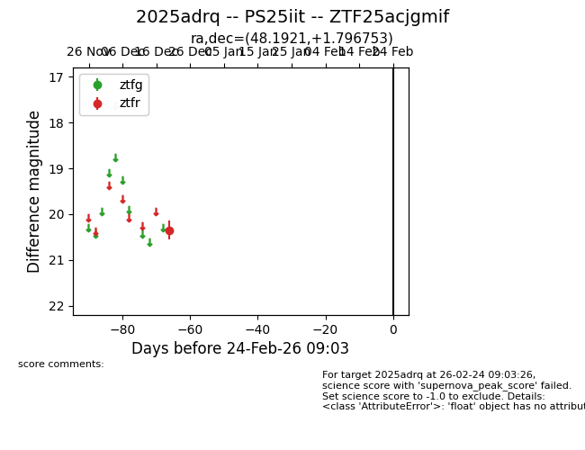
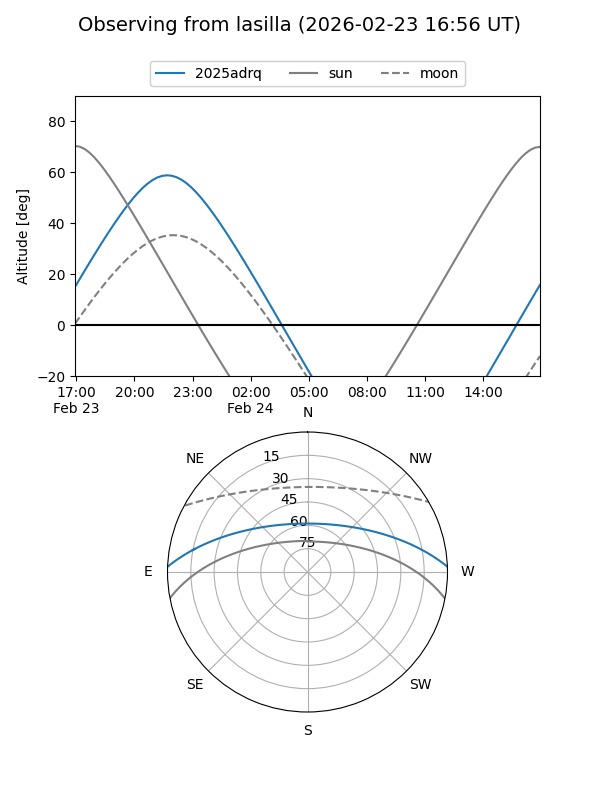
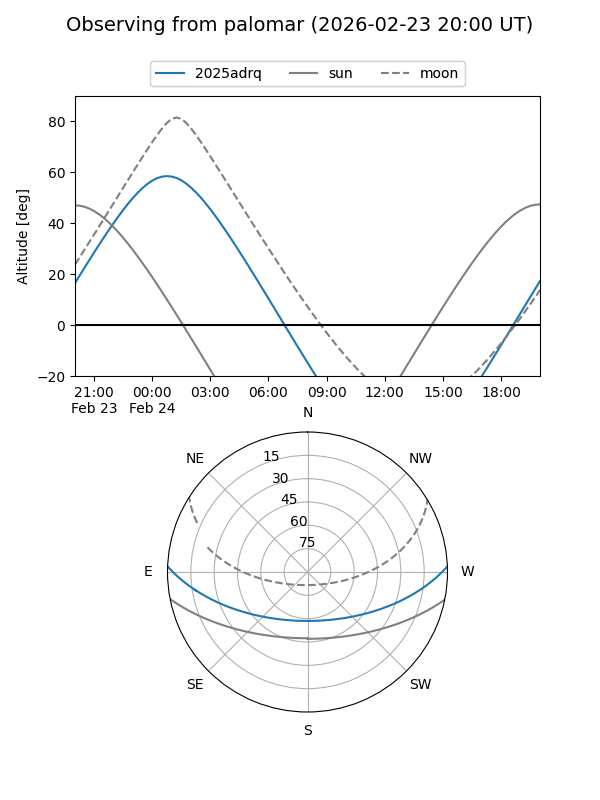

2025adrq
Target 2025adrq at 2025-12-31 18:01
Aliases and brokers:
FINK: link
Lasair: link
ALeRCE: link
TNS: link
YSE: link
alt names
ZTF25acjgmif (ztf,fink_ztf)
2025adrq (tns,yse)
PS25iit (panstarrs)
Coordinates:
equatorial (ra, dec) = 48.1921,+1.79675
equatorial (HMS+DMS) = 03:12:46.10,+01:47:48.31
galactic (l, b) = (178.2678,-45.34942)
Flags:
Photometry:
last ztfr=20.35
1 ztfr detections
Lightcurve

Visibility


Additional plots